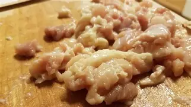
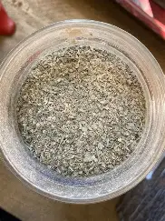
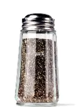
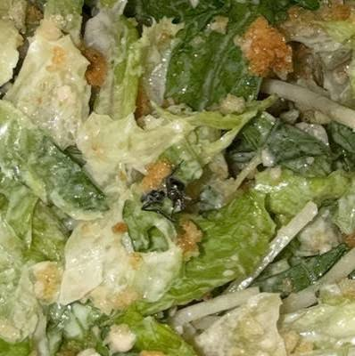
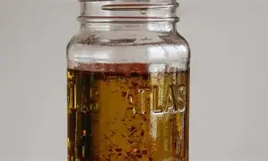
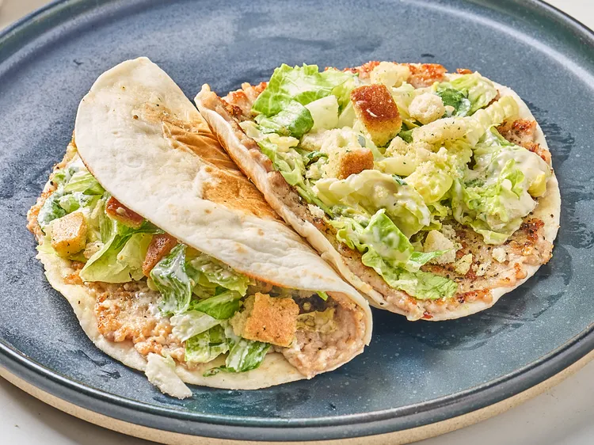

| Ingredient | Amt | Picture |
| Spread ground chicken evenly in a very thin layer over each tortilla, pressing the meat all the way to the edges. Sprinkle with Greek seasoning, salt, and pepper. Chop lettuce (if pieces are large) into smaller pieces. Toss with included packets of dressing and cheese. Slightly crush croutons included in salad mix and set aside. Heat a griddle or large nonstick skillet on medium-high heat. Spread half of the olive oil over the hot surface. Working in 2 batches, place prepared tortillas, meat side down on griddle and cook, undisturbed, until meat is browned and cooked through, about 3 minutes. Flip, and cook 1 minute more. Repeat with remaining tacos. Top tacos evenly with Caesar salad and sprinkle with crushed croutons. Fold in half and serve immediately. | ||
| Ground Chicken | 1 lb |  |
| Flour Tortilla | 6 | |
| Greek Seasoning | 2 teaspoons |  |
| Salt | 1/4 teaspoon | |
| Black Pepper | 1/4 teaspoon |  |
| Caesar salad mix | 1 package |  |
| Olive oil | 1 tablespoon |  |
